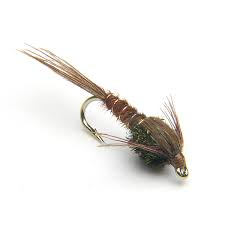

 Spring fishing can be hard but productive fishing. It is hard to figure out what the trout are eating. If you do not know what is working tie on a pheasant tail nymph. This great little fly that imitates many different bugs trout love to eat. This fly will usually put large spring trout in the net.